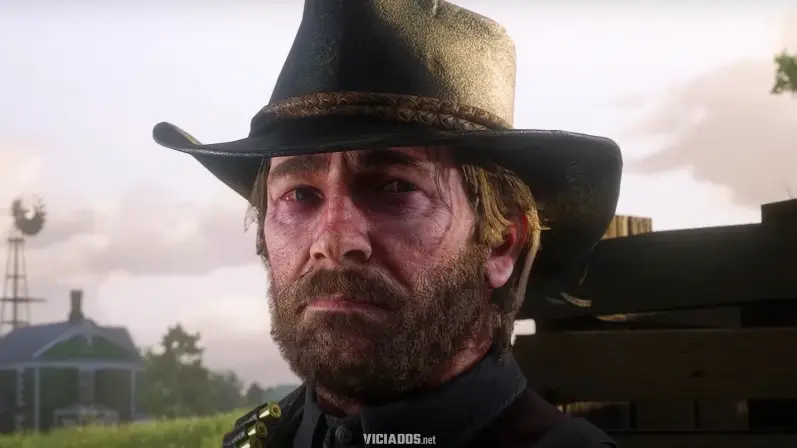
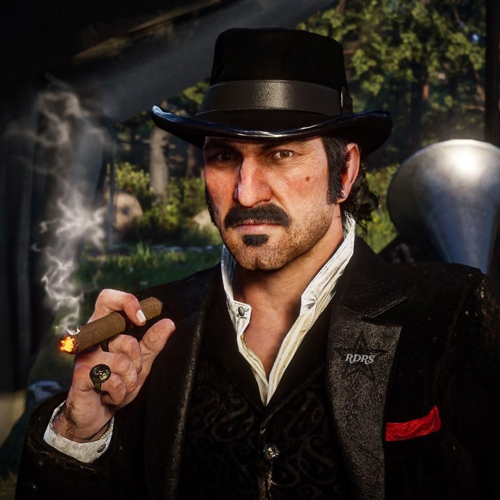
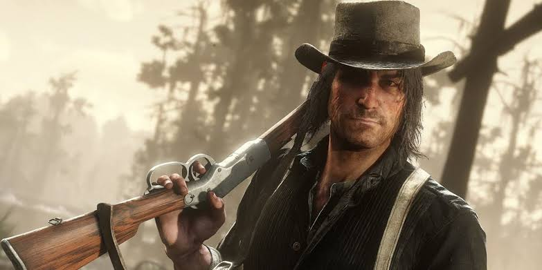
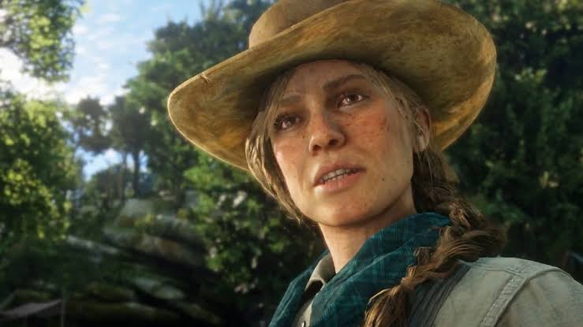
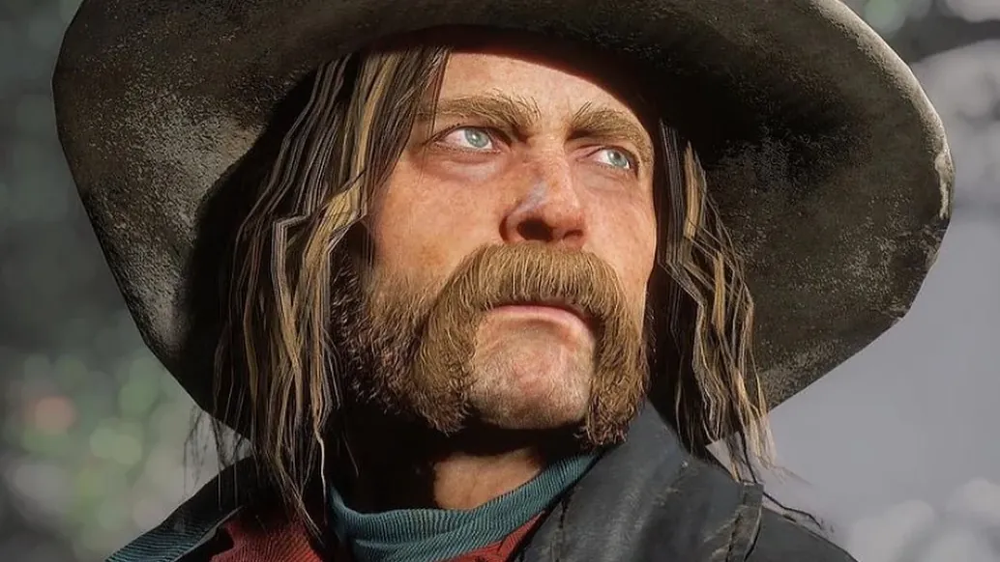
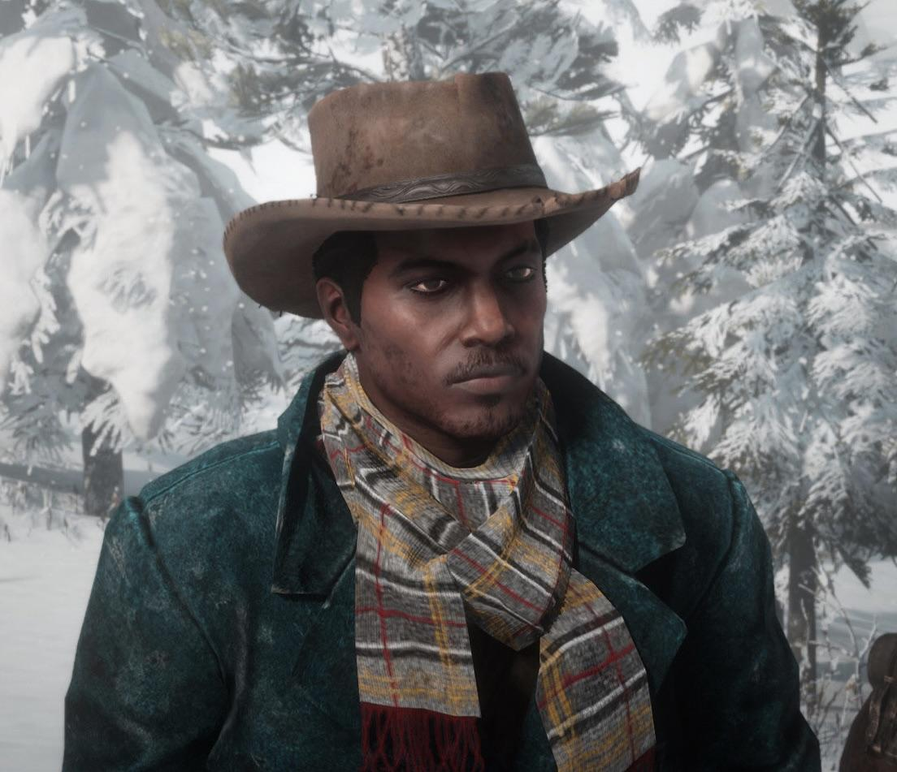
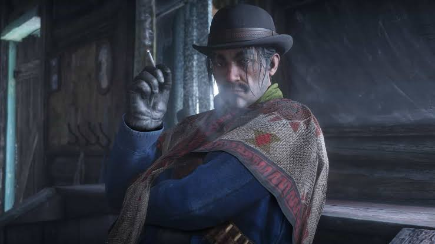
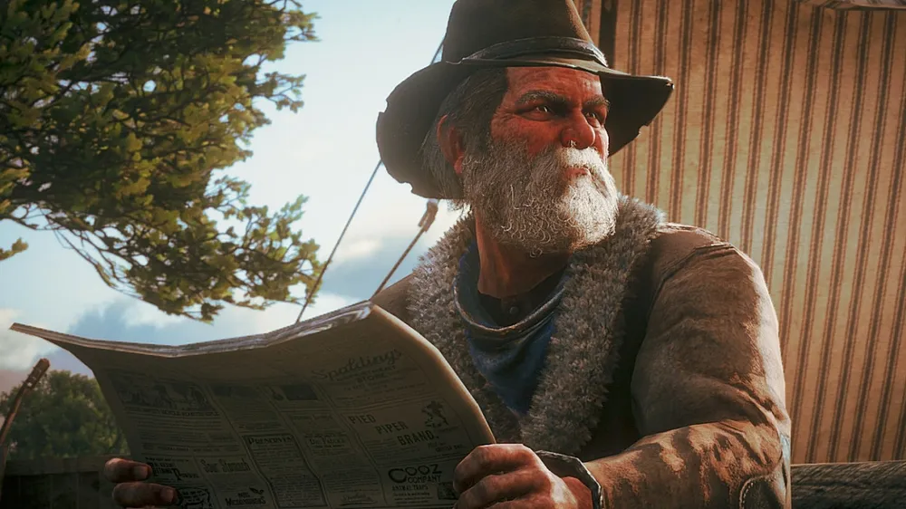

Arthur Morgan

Criado por Dutch e Hosea desde muito jovem, Arthur Morgan é o executor chefe e o membro mais confiável da gangue. Ele é um homem durão, prático e formidável, que viveu toda a sua vida à margem da lei. No início da história, Arthur acredita cegamente nos ideais de Dutch sobre uma vida livre e sem as amarras do governo e da civilização moderna.
No entanto, à medida que a gangue enfrenta perdas irreparáveis e a liderança de Dutch se torna cada vez mais errática e violenta, Arthur começa a questionar tudo o que acreditava. Sua jornada é marcada por uma profunda crise de consciência e uma busca por redenção, tentando proteger aqueles que ainda têm uma chance de salvação antes que o tempo da gangue chegue ao fim.
Dutch van der Linde

Líder e fundador da gangue que leva seu nome, Dutch é um homem extremamente carismático, inteligente e um orador nato. Ele se vê não como um criminoso comum, mas como uma espécie de Robin Hood moderno, um rebelde romântico lutando contra um sistema corrupto que oprime as pessoas comuns. Ele inspira uma lealdade inabalável em seus seguidores.
Porém, com o cerco das autoridades se fechando e a morte constante de seus aliados, a fachada de idealista de Dutch começa a desmoronar. Pressionado pelas circunstâncias e manipulado por más influências, ele revela uma natureza egocêntrica, paranoica e impiedosa, levando a gangue a tomar decisões cada vez mais desastrosas que culminam na destruição de sua própria "família".
John Marston

Para os fãs da franquia, John Marston já é uma lenda por ser o protagonista do primeiro Red Dead Redemption. Neste jogo, acompanhamos um John mais jovem, inexperiente e muitas vezes imaturo. Assim como Arthur, ele foi acolhido por Dutch ainda garoto e cresceu sob a tutela da gangue, mas sua relação com a vida de fora da lei é complicada pela presença de sua esposa, Abigail, e seu filho pequeno, Jack.
Durante a história, a relação de irmão entre John e Arthur é central. Arthur frequentemente critica John por não valorizar a família que tem, mas acaba se tornando o maior protetor dos Marston. A evolução de John de um bandido relutante para um homem disposto a sacrificar tudo por sua esposa e filho é uma das tramas mais emocionantes do jogo.
Sadie Adler

Encontrada pela gangue no início do jogo após ter sua casa invadida e seu marido assassinado pela gangue rival dos O'Driscoll, Sadie Adler passa por uma das transformações mais impressionantes da história. Inicialmente traumatizada e isolada, ela se recusa a ser uma vítima e logo demonstra uma coragem e uma sede de vingança implacáveis.
Ao longo da campanha, Sadie abandona os vestidos e assume as armas, tornando-se uma aliada crucial para Arthur Morgan em seus momentos mais difíceis. Sua lealdade a Arthur e sua recusa em se curvar às regras de uma sociedade machista fazem dela uma personagem icônica, provando ser mais valente e perigosa do que a maioria dos homens da gangue.
Micah Bell

Micah é a mais recente adição à gangue Van der Linde e, sem dúvida, o membro mais odiado tanto pelos jogadores quanto por personagens como Arthur e Hosea. Ele é um sobrevivente darwinista implacável, que acredita apenas na lei do mais forte. Sádico, racista, manipulador e imprevisível, Micah tem prazer em causar violência e confusão por onde passa.
Sua maior arma, no entanto, é sua capacidade de manipular Dutch. Sussurrando veneno nos ouvidos do líder e incentivando suas piores tendências, Micah age como um parasita que se aproveita da paranoia de Dutch para ganhar poder. Ele representa o oposto de tudo que Arthur tenta alcançar, servindo como o antagonista perfeito na queda trágica da gangue.
Lenny Summers

Apesar de sua juventude, Lenny Summers é um dos membros mais respeitados da gangue Van der Linde. Inteligente, educado e extremamente capaz, ele se juntou ao bando após buscar vingança contra os homens que assassinaram seu pai. Dutch o acolheu, e Lenny rapidamente provou seu valor tanto em tiroteios quanto em discussões intelectuais no acampamento.
A dinâmica entre Lenny e Arthur Morgan é um dos pontos altos do jogo, culminando em uma das missões mais hilárias e memoráveis (a famosa bebedeira no saloon de Valentine). Arthur vê em Lenny um grande potencial para uma vida melhor, tornando o arco do jovem um dos mais trágicos e emocionantes da narrativa.
Javier Escuella

Javier é um ex-revolucionário mexicano que fugiu para os Estados Unidos após desentendimentos em sua terra natal. Ferozmente leal a Dutch, que o salvou de morrer de fome, Javier vê o líder da gangue não apenas como um chefe, mas como a verdadeira encarnação dos ideais de liberdade pelos quais ele sempre lutou.
Excelente músico e combatente ágil, ele frequentemente anima o acampamento tocando seu violão ao redor da fogueira. No entanto, quando a gangue começa a se desintegrar, a lealdade inabalável de Javier a Dutch o coloca em uma posição difícil, forçando-o a escolher entre seus velhos amigos, como Arthur e John, e o homem que salvou sua vida.
Uncle (Tio)

O homem conhecido apenas como "Uncle" (Tio) é uma das figuras mais antigas do acampamento e funciona quase exclusivamente como o alívio cômico do grupo. Ele é um bêbado contumaz e mestre na arte de evitar qualquer tipo de trabalho físico, sempre usando a desculpa de que sofre de uma condição terminal e debilitante chamada "lumbago".
Apesar de sua preguiça irritar profundamente personagens como John e Arthur, Uncle tem um bom coração e, à sua própria maneira torta, é leal àqueles que considera sua família. Ele sobrevive não pela força ou inteligência, mas por pura sorte e pela caridade do resto da gangue, acompanhando-os até o amargo fim.